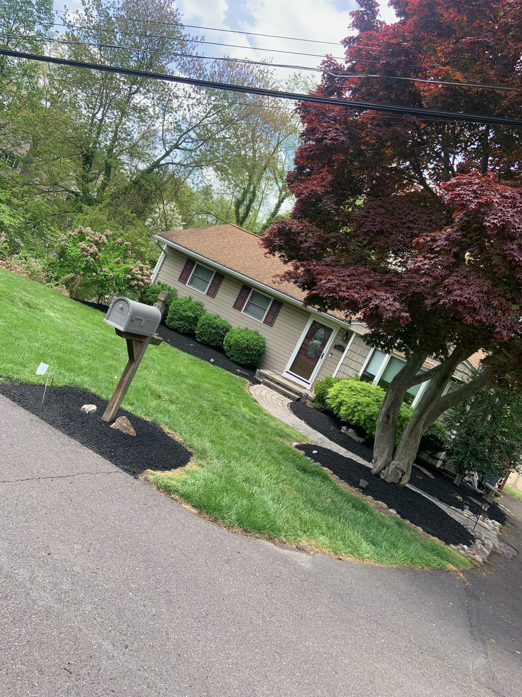
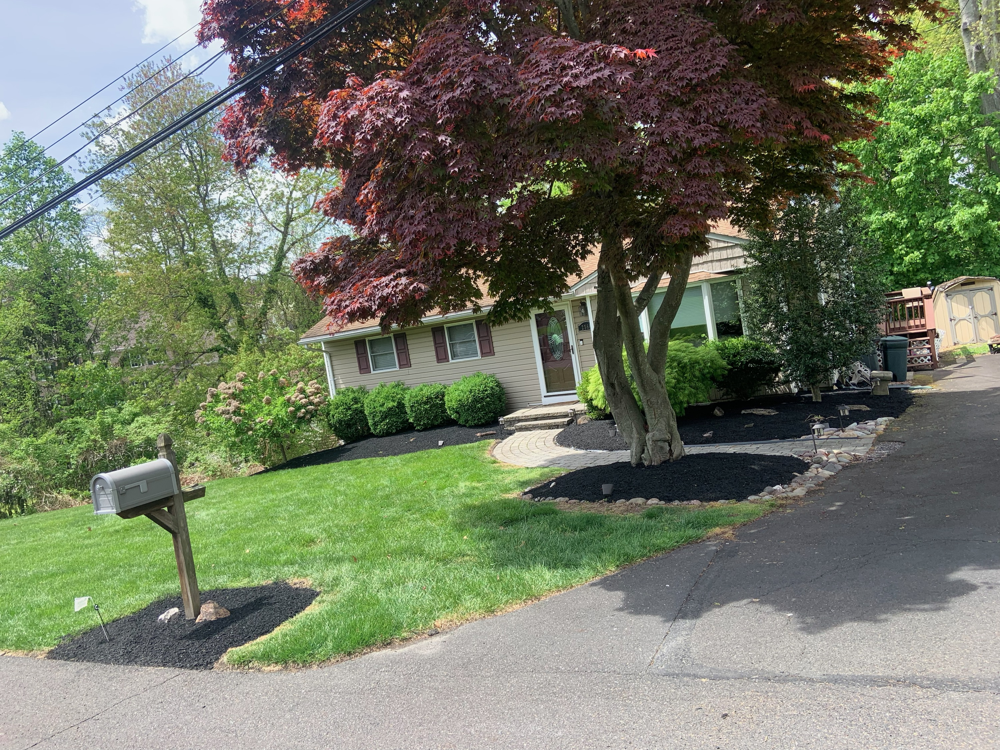
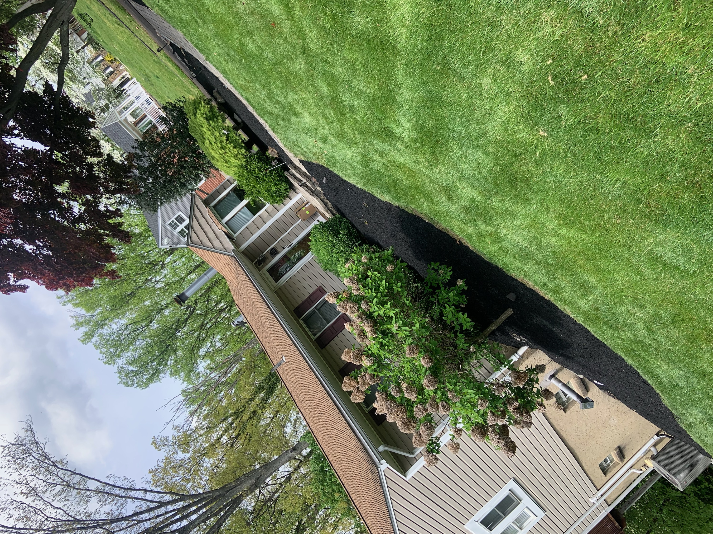
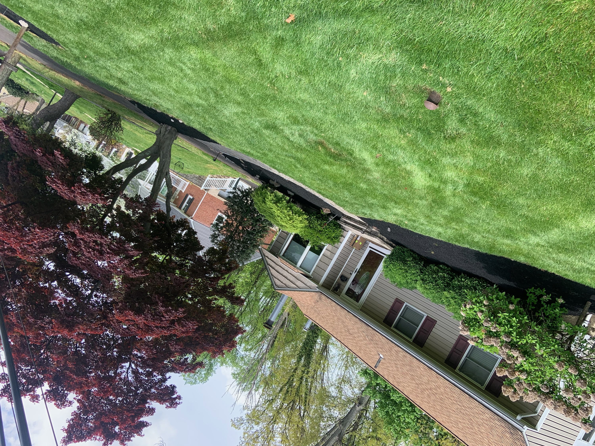
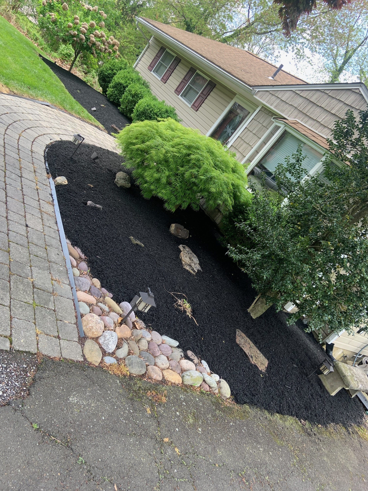
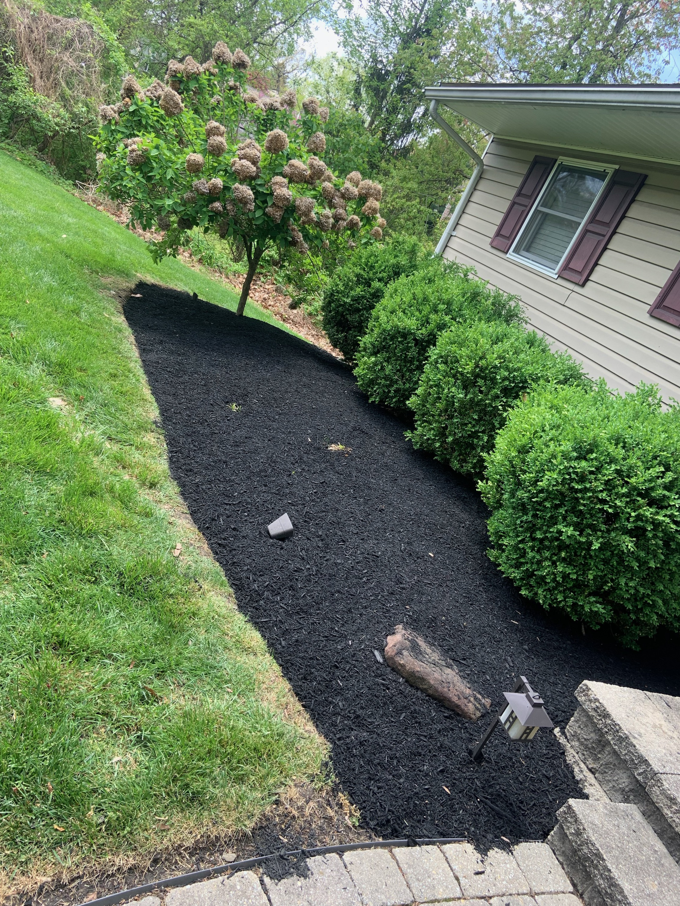
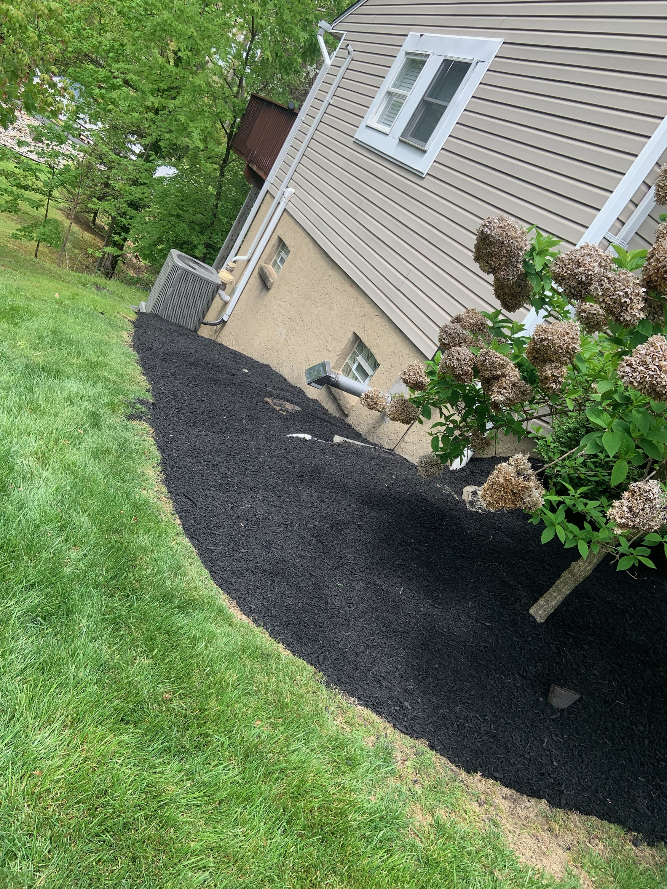
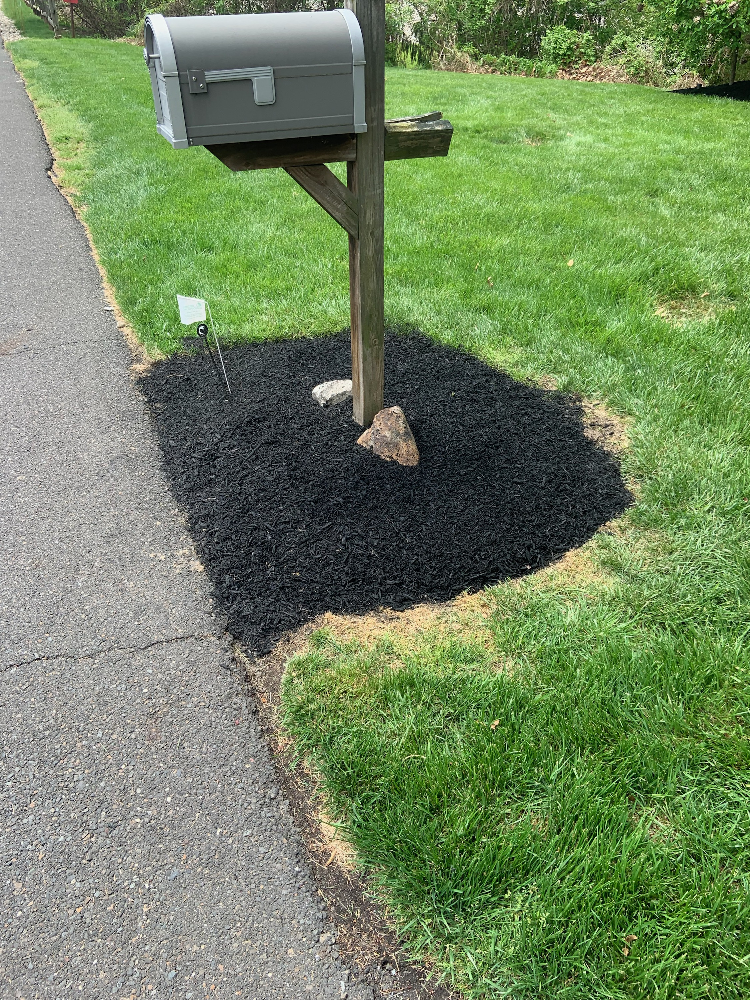

A comprehensive landscaping project featuring black mulch beds, decorative river rock borders, shaped shrubs, and precision lawn striping on a sloped suburban property.

This shot shows the full scope of the project, with mulch beds, shaped shrubs, and clean turf all working together.

A straight-on view showing how the landscaping frames the home's entrance.

Consistent lines from edge to edge across this wide front lawn. That's the level of care we bring on every visit.

Mulch beds and rounded shrubs carry the same level of detail around the side of the home.

Trimmed plantings and fresh mulch line the walkway for a clean, welcoming approach.

Hand-placed river rock creates a clean border between the mulch bed and paver walkway. Small details like this make all the difference.

A custom river rock ring around the tree base protects roots while adding a decorative accent that ties the whole landscape together.

Rounded boxwoods in rich black mulch bring structure and shape to the side bed.

The mulch bed wraps around the entire house, maintaining a consistent look from front to back.

Even the mailbox gets the full treatment. Fresh mulch and accent stone for a polished finish.